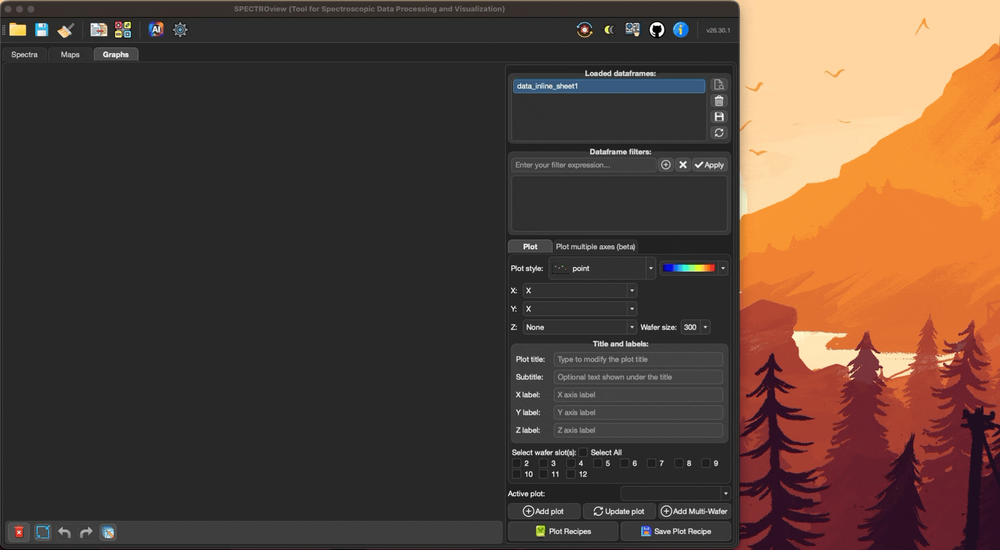

ИИ-агент
ИИ-чат-агент¶
ИИ-ассистент SPECTROview (SPECTROview AI Agent) — это встроенный интеллектуальный помощник, который позволяет выполнять запросы, фильтровать, визуализировать и изменять данные на обычном естественном языке без программирования.
ИИ-чат-агент является дополнительной функцией. SPECTROview полноценно работает и без него — настраивать его нужно только в том случае, если вы планируете использовать возможности ИИ.

Общайтесь со SPECTROview на естественном языке, чтобы фильтровать данные, а также создавать или настраивать графики.
1. Открытие ИИ-чат-агента¶
Переключать отображение встроенной панели ИИ-чата можно двумя способами:
- Нажмите кнопку AI Chat Agent в правой части верхней строки меню (непосредственно перед кнопкой Проверить обновления (Check for updates)).
- Используйте сочетание клавиш
Ctrl + Shift + A.
Панель встроена непосредственно в правую часть главного графического интерфейса, рядом с вкладками рабочих областей (Спектры (Spectra), Карты (Maps), Графики (Graphs)). Вы можете свободно изменять её ширину с помощью разделителя или нажать кнопку закрытия (✕) в заголовке панели, чтобы скрыть её и вернуть рабочим областям всю ширину окна.
2. Поддерживаемые провайдеры¶
ИИ-агент «из коробки» поддерживает несколько LLM-бэкендов — устанавливать дополнительные пакеты не требуется:
| Провайдер | Описание | Требования |
|---|---|---|
| Ollama (локально) (Ollama (local)) | Полностью локальная работа, без интернета и API-ключа | Установленный и запущенный Ollama |
| OpenAI | GPT-4o, GPT-4o-mini и др. | API-ключ |
| DeepSeek | Экономичные модели с высоким качеством логического вывода | API-ключ DeepSeek |
| Gemini | Модели Google Gemini | API-ключ Gemini |
| Mistral | Модели Mistral AI | API-ключ Mistral |
| Anthropic | Модели Claude | API-ключ Anthropic |
| Пользовательский (Custom) | Любой OpenAI-совместимый сервер (например, внутренний или корпоративный) | Базовый URL + API-ключ |
Примечание: DeepSeek, Gemini и другие OpenAI-совместимые провайдеры используют Python-пакет
openaiисключительно как универсальный сетевой клиент. Вы не отправляете свои данные в OpenAI — сам пакет лишь переиспользуется как стандартный клиентский инструмент для работы с API.
3. Настройка провайдера и модели¶
- В нижней части панели, в области Chat Composer, выберите AI Provider из выпадающего списка (
Ollama (local),OpenAI,Anthropic,Mistral,Gemini,DeepSeekилиCustom). -
Для облачных провайдеров укажите ваш API-ключ в диалоговом окне Настройки (Settings) (
Ctrl + Shift + S→ вкладка Настройки ИИ (AI Settings)):- Поля Пользовательский API-ключ (Custom API Key), Базовый URL (Base URL) и Название модели (Model Name(s)) для провайдера Пользовательский отображаются по умолчанию.
- Ключи других облачных провайдеров сгруппированы в свёрнутом разделе ▸ Другие облачные провайдеры (Other cloud providers).
- Нажмите кнопку Проверить подключение (Test Connection) прямо во вкладке Настройки ИИ, чтобы проверить аутентификацию, доступность сервера и наличие модели с мгновенной визуальной индикацией (
✓ Connection successfulили подробным сообщением об ошибке).
-
Выберите Модель (Model) из редактируемого выпадающего списка моделей рядом с выбором провайдера на панели ввода. Если нужной модели нет в списке, вы можете ввести её идентификатор вручную.
- Нажмите кнопку ⟳ refresh рядом со списком моделей, чтобы обновить перечень доступных моделей.
Название модели и отображаемое имя: Некоторые серверы (особенно пользовательские) не предоставляют API для получения списка моделей. Укажите названия используемых моделей в окне Настройки → вкладка Настройки ИИ → Название модели через запятую (например,
model-a, model-b). Вы также можете задать собственное Отображаемое имя (Display Label) (например,ABCилиLab Model), чтобы ваш сервер отображался в выпадающем списке провайдеров под этим именем вместо стандартногоCustom. Изменения настроек сразу применяются ко всем открытым панелям чата.
4. Автоматическая оптимизация для небольших моделей¶
Небольшие локальные модели (примерно до ~10 млрд параметров — такие как qwen2.5:7b, gemma2:2b, phi3:mini) заметно чувствительнее к длинным системным промптам. SPECTROview автоматически определяет число параметров локальных моделей Ollama и включает компактный уровень системного промпта, сфокусированное окно контекста диалога и адаптированные параметры генерации.
5. Современный редактор сообщений и обзор интерфейса¶
Интерфейс чата имеет продуманную и единую компоновку:
- Верхняя панель заголовка: компактная однострочная панель с редактируемым названием диалога слева (занимает всю доступную ширину) и кнопками быстрых действий справа: История диалогов (Chat History), Новый чат (New Chat), Очистить чат (Clear Chat) и Close Panel (
✕). - Лента диалога: отображает карточки сообщений с цветовым кодированием (сообщения пользователя, ответы ИИ с форматированием Markdown, таблицами и формулами, а также уведомления об ошибках).
-
Встроенный блок ввода: скруглённая область в нижней части панели, включающая:
- Многострочное текстовое поле с автоматическим изменением высоты (
Enter— отправка сообщения,Shift + Enter— перенос строки). - Встроенную нижнюю панель инструментов с селектором AI Provider, селектором Модель, кнопкой Refresh, микрофоном голосового ввода (
🎤) и кнопкой Отправить (Send) ▶ / Стоп (Stop) ■.
- Многострочное текстовое поле с автоматическим изменением высоты (
Окно истории диалогов¶
При нажатии на кнопку История диалогов открывается окно управления диалогами в стиле PLUME:
- Фильтр поиска: мгновенный текстовый поиск по названиям диалогов в реальном времени.
- Группировка по разделам: закреплённые диалоги отображаются вверху в разделе Закреплённые (PINNED); остальные группируются хронологически (Сегодня (TODAY), Вчера (YESTERDAY), На этой неделе (THIS WEEK), Ранее (OLDER)).
- Точные метки времени и число сообщений: каждая карточка диалога показывает точное время (
YYYY-MM-DD HH:MM:SS) и количество сообщений. - Действия: закрепление/открепление, переименование, дублирование и удаление диалогов с помощью кнопок на строке диалога или через контекстное меню по правому щелчку мыши.
- Безопасное удаление всех диалогов: кнопка Удалить все (Delete All) очищает незакреплённые диалоги, надёжно сохраняя закреплённые.
Сообщения в панели чата выводятся в хронологическом порядке в виде наглядных блоков с цветовым кодированием:
- 🔵 Синий блок — ваши сообщения (пользователь)
- 🟢 Зелёный блок — ответы ИИ-агента
- 🔴 Красный блок — сообщения об ошибках
Для каждого сообщения отображается метка времени (YY-MM-DD HH:MM) и кнопки действий:
- 📋 Копировать (Copy) — скопировать текст сообщения в буфер обмена
- ↩ Ответить (Reply) (только для сообщений ИИ) — ответить конкретно на это сообщение ИИ
🎤 Голосовой ввод (опционально)¶
Вы можете использовать кнопку микрофона на панели ввода, чтобы диктовать запросы голосом вместо набора текста. Для этой функции требуются дополнительные зависимости:
Если эти пакеты не установлены, кнопка микрофона всё равно будет отображаться, но при нажатии на неё появится сообщение с инструкцией по их установке.
6. Возможности ИИ-агента¶
ИИ-агент имеет полное представление о загруженных вами DataFrame и открытых графиках. Он умеет:
- Фильтровать данные: выводить строки, удовлетворяющие любым условиям
- Вычислять статистику: среднее, стандартное отклонение, минимум, максимум, процентили
- Строить графики: создавать графики в любом из 9 поддерживаемых стилей
- Изменять графики: обновлять пределы осей, заголовки, цвета и фильтры
- Удалять графики: удалять отдельные или все открытые графики
- Отвечать на вопросы: пояснять содержимое столбцов, предлагать дальнейшие шаги анализа
Агент всегда знает названия всех ваших DataFrame, а также имена и типы каждого столбца. Остальные сведения — например, примеры значений в столбце или точные текущие настройки конкретного графика — он запрашивает только тогда, когда это необходимо для ответа, благодаря чему обычные запросы выполняются максимально быстро.
7. Примеры запросов (промптов)¶
🚀 Сложные / комбинированные запросы¶
Главная сила агента заключается в выполнении сложных многошаговых задач за одно сообщение — он может проанализировать данные, построить несколько графиков и сразу настроить их оформление.
Анализ с последующим построением:
Compute the mean and std of center_Si per Zone, then create a bar plot of the
per-Zone mean with error bars from the std, sorted from highest to lowest.
Find the wafer with the highest average FWHM_Si, filter to just that wafer, and
plot a wafer map of its FWHM_Si.
Несколько графиков в одном запросе:
Create three graphs: a scatter of Slot vs center_Si colored by Zone, a box plot
of center_Si grouped by Zone, and a histogram of center_Si with 40 bins.
Построение и настройка оформления в одном запросе:
Make a scatter plot of Slot vs center_Si colored by Zone, set the title to
"Si peak position", label the Y-axis "Raman shift (cm⁻¹)", set the Y range to
[520, 522], use the viridis palette, and turn on the grid.
Plot FWHM_Si vs temperature as a trendline, filter to Zone == "center", move the
legend to the upper right, and use a log scale on the X-axis.
Всё вместе:
Filter the data to R_squared > 0.95, then create a scatter plot and a box plot
of center_Si vs Zone side by side, colored by wafer, both with the title
"High-quality fits only" and the grid enabled.
🧩 Простые одношаговые запросы¶
Удобные базовые примеры, каждый из которых выполняет одну операцию — фильтрацию, сводку, построение графика, правку параметров или ответ на вопрос. Их можно свободно объединять в сложные запросы, показанные выше.
(Примечание: для графиков wafer (карта пластины) и 2Dmap (2D-карта) в вашем наборе данных должны присутствовать столбцы пространственных координат X и Y.)
8. История диалогов¶
ИИ-агент помнит контекст беседы на протяжении нескольких реплик:
User: Show rows where FWHM > 5
AI: Found 42 rows...
User: Now create a scatter plot of Slot vs center_Si for those rows
AI: (creates scatter plot with FWHM > 5 filter applied)
- История чата сохраняется при загрузке новых файлов или переключении наборов данных — она сбрасывается только при нажатии кнопки ➕ Новый чат.
- Предыдущие диалоги автоматически сохраняются, и их можно повторно открыть через панель History (кнопка 📋).
- Используйте кнопку ↩ Ответить под любым сообщением ИИ, чтобы ответить именно на эту реплику.
9. Советы и рекомендации¶
- Указывайте точные названия столбцов — ИИ знает имена всех столбцов, но точное написание исключает неоднозначность.
- Указывайте ID графиков — при изменении или удалении графика сверьтесь с его номером (ID) в строке заголовка окна.
- Начинайте с простого — сначала запросите базовый график, а затем уточняйте оформление в последующих сообщениях.
- Несколько графиков сразу — запрашивайте разные типы визуализации в одном сообщении: «Create a box and scatter plot of X vs Y».
- Следите за строкой состояния — красный индикатор 🔴 означает отсутствие подключения. Проверьте API-ключ в окне Настройки или убедитесь, что Ollama запущен.
- Локальная модель не справляется? — см. раздел 4, ограничивайте запрос одним-двумя графиками за сообщение и отдавайте предпочтение моделям с официально заявленной поддержкой вызова инструментов (tool/function calling).
10. Устранение ошибки «Connection error.»¶
Если облачный или пользовательский провайдер возвращает ошибку «Connection error.», приложению вообще не удалось установить сетевое соединение (это не ошибка неверного названия модели и не истёкший API-ключ — для них выводятся другие сообщения). Основные причины:
- Неверный базовый URL — для провайдера Пользовательский проверьте поле Базовый URL в окне Настройки. Там должен быть указан корневой OpenAI-совместимый адрес сервиса (например,
https://host/v1илиhttps://host/openai/), а не полный путь.../chat/completions. - Корпоративный или внутренний сервер с частным сертификатом — локальный сервер в интрасети (например,
https://…intra.company…/) часто защищён корпоративным центром сертификации, которому Python по умолчанию не доверяет, из-за чего возникает скрытая ошибка certificate verify failed. SPECTROview решает эту проблему автоматически, доверяя системному хранилищу сертификатов вашей ОС (через пакетtruststore, предустановленный по умолчанию). Если ошибка всё же сохраняется, перед запуском программы укажите путь к цепочке сертификатов вашей организации в формате.pem(например,chain_bundle.pem) через переменную окруженияSSL_CERT_FILE. - Отсутствие доступа к сети / VPN — внутренний сервер может быть доступен только из корпоративной сети или при подключённом VPN.
Теперь карточка ошибки отображает под основным сообщением первопричину сбоя (например, CERTIFICATE_VERIFY_FAILED, getaddrinfo failed), что позволяет сразу определить, какой из перечисленных случаев имеет место.
11. Горячие клавиши¶
| Сочетание клавиш | Действие |
|---|---|
Ctrl + Shift + A |
Открыть ИИ-чат-агент |
Enter |
Отправить сообщение |
Shift + Enter |
Перенос строки в поле ввода |